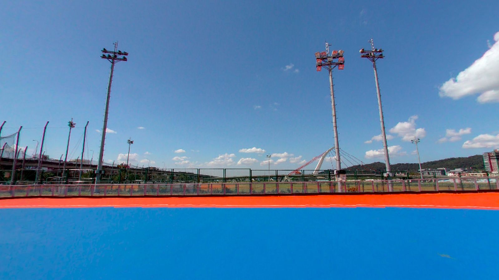

〔待確認草稿，尚未發布〕
115年全國中正盃
行前通知｜115學年度第48屆中正盃全國溜冰錦標賽

重要連結
ℹ️比賽資訊
📅
比賽日期
115年11月13日（五）至11月15日（日）
共3天・自由式輪滑・臺灣時間 UTC+8
👕
服裝
花樁表演服 / 黃T
📍
🎒
攜帶物品
直排輪全套護具（安全帽）防曬物品水個人證件太陽眼鏡椅子野餐墊雨具運動飲料涼感巾備用輪子
🧾
補助
補助申請收據每年兩次
餐費每人每日300
⏰本隊場次
- 11/13（五）08:45–12:30場次 3 高中男子個人花式繞樁直接決賽黃靖丞 385 治平高中。場次 1、2 在前。
- 11/13（五）08:45–12:30場次 4 高中女子個人花式繞樁直接決賽陳宥滋 386 陽明高中。場次 1、2 在前。
- 11/13（五）13:30–18:00場次 6 國中女子個人花式繞樁直接決賽鄒亦晴 388 中興國中、劉芊郁 389 龍潭國中、劉睿淇 390 龍潭國中
- 11/13（五）13:30–18:00場次 8 國小女子個人花式繞樁直接決賽陳宥妧 384 大埔國小。場次 7 在前。
- 11/14（六）08:45–11:00場次 13 前溜雙足S形 A場直接決賽陳宥妧 384 大埔國小・國小中年級女子
- 11/14（六）11:15–12:00場次 21 前溜單足S形 A場直接決賽陳宥妧 384 大埔國小・國小中年級女子
- 11/15（日）14:30–18:00場次 44 高中女子花式煞停直接決賽陳宥滋 386 陽明高中。場次 42、43 在前。
※ 官方場次時段，不是選手個人開滑時間。實際以現場公告為準，請提早到。集合時間：待教練通知。
🏫學校統編
- 1
龍潭國中 44424012
桃園市立龍潭國民中學
- 2
陽明高中 36445338
桃園市立陽明高級中等學校
- 3
大埔國小 21506005
桃園市龜山區大埔國民小學
- 4
中興國中 43861844
桃園市立中興國民中學
- 5
📢注意事項
- 1
學生組請備妥學生證影本或附有相片之在學證明供大會抽驗。
- 2
國小中年級（含）以下速度過樁選手需配戴全套護具及安全帽，其餘組建議配戴。
- 3
迎風地板比較黏，請所有人提前作場地適應。培林可以提前清洗上油，增加滑順度。祝所有孩子做出最好的發揮，取得佳績！